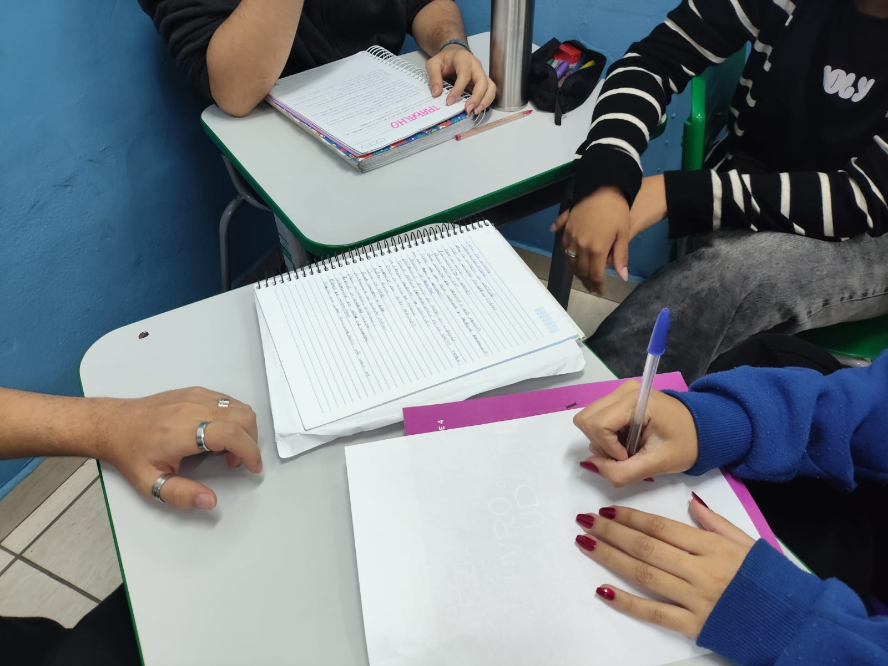

Sobre a Escola Estadual José Maria Matosinho
A Escola Estadual José Maria Matosinho está localizada no bairro São Bernardo, em Campinas – SP, na Praça Professor Paulo José Otaviano, s/n. Como parte da rede pública estadual de ensino, a escola atende aos anos finais do Ensino Fundamental, ao Ensino Médio e à Educação de Jovens e Adultos (EJA), oferecendo uma formação sólida e acessível à comunidade local.
Nossa missão é proporcionar uma educação de qualidade, inclusiva e transformadora, que forme cidadãos críticos, éticos e preparados para os desafios do século XXI. Acreditamos que a educação é o caminho para o desenvolvimento pessoal e social, fortalecendo os laços da comunidade e promovendo valores como respeito, solidariedade e responsabilidade.
A estrutura da escola é planejada para favorecer o aprendizado e a convivência. Contamos com laboratórios de informática, quadra esportiva coberta, sala de leitura e pátios amplos, que incentivam o desenvolvimento intelectual, físico e emocional dos estudantes. Buscamos constantemente melhorias em nossos espaços e práticas pedagógicas, tornando o ambiente escolar mais dinâmico, acolhedor e inspirador.
Além do ensino em sala de aula, valorizamos o protagonismo estudantil e incentivamos projetos culturais, esportivos e tecnológicos. Nossos alunos participam de atividades que estimulam a criatividade, o trabalho em equipe e a autonomia, preparando-se não apenas para o vestibular, mas também para a vida e o mercado de trabalho.
A escola também acredita na importância da parceria com as famílias e com a comunidade. Mantemos um diálogo aberto com pais, responsáveis e instituições locais, promovendo eventos e ações que fortalecem o vínculo entre escola e sociedade.
A Escola Estadual José Maria Matosinho tem orgulho de sua trajetória e de seu papel na formação de gerações de estudantes em Campinas. Nosso compromisso é continuar evoluindo, oferecendo uma educação pública de excelência e contribuindo para a construção de um futuro melhor para todos.
Por que o projeto foi criado:
Nomes:
